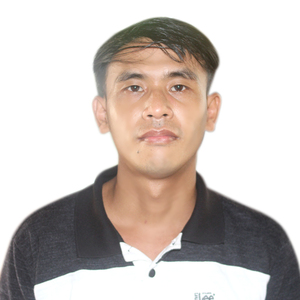

About Me
This is Celwyn Alexis B. Panis, I am from Mambajao, Camiguin, Philippines. I am 41 years old, born on August 7, 1984. I am happily married and have three children. I am a devoted husband and hands-on father. I cherish quality time with my children — whether at home or engaging in outdoor activities like fishing — and I find joy and fulfillment in being present for my family.
I am an Administrative Professional with extensive experience in government service, healthcare support, and community leadership.
I’m passionate about serving others through efficient administrative work, technology-driven solutions, and compassionate support.
For more than 10 years, I have worked in various roles—ranging from Administrative Aide,
Administrative Assistant III (City / Municipal Roving Bookkeeper), Project Development Officer, and volunteer church leader. I have served in
institutions such as the Camiguin General Hospital, Department of Social Welfare and
Development (DSWD), and The Church of Jesus Christ of Latter-day Saints, where I
handled responsibilities in documentation, records management, financial coordination,
people support, and community programs.
I am currently pursuing an Associate Degree in Software Development at Brigham Young
University–Idaho, strengthening my skills in technology and preparing myself for modern,
digital-driven administrative work. I also hold degrees in Human Resource Development
and Management from Capitol University and Professional Education - Social Studies, along
with training in Bookkeeping and Computer Technology.
Across all my experiences, I’ve grown into a reliable, detail-oriented, and service-focused
individual who values integrity, teamwork, and continual learning. I aim to use my skills to
contribute meaningfully to any organization I serve—combining administrative expertise,
technical knowledge, and a sincere desire to help others.
